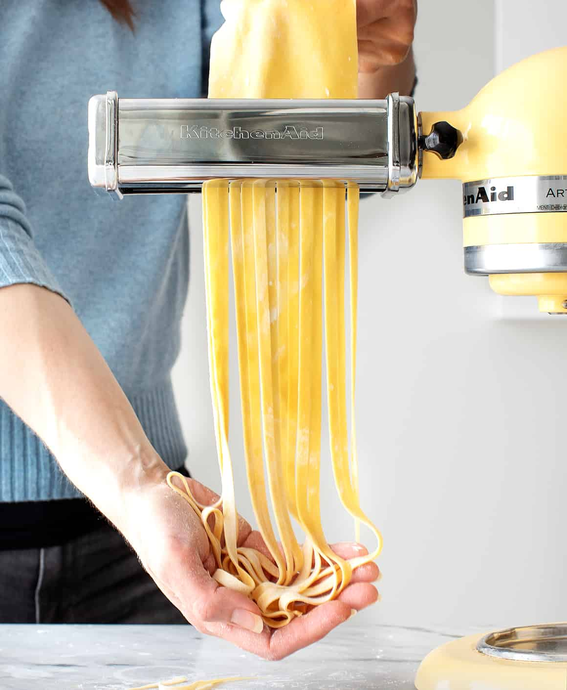

WHO DOESN'T LIKE SPAGGERS - THE GUIDE

Instructions
Ingredients
- 2 Cups All purpose Flour
- 3 Large Egg
- 1/2 Teaspoon Salt
- 1/2 Tablesoon Extra Virgin Olive Oil
- 4 Tomatoes
- 4 Cloves of Garlic
- 1 Red Onion
- Chilli Flakes
Steps
- Sift All Purpose Flour, salt and oil and slowly stir in eggs 1 at a time until nice and doughy
- Kneed ball for 10 years until dough is nice and springy and let rest for 1 hour
- As Dough is resting, prepare sauce
- Super fine dice garlin and onions
- In a Pan, sautee garlic and onions until brown
- Add crushed tomatoes and simmer until sauce thicc
- Add salt, sugar and chilli flakes to taste
- After dough is rested, roll out and slice into 1cm strips
- Boil spaggers for 7 minutes or until al dente
- Stir spaggers into sauce, plate and enjoy! VOILA